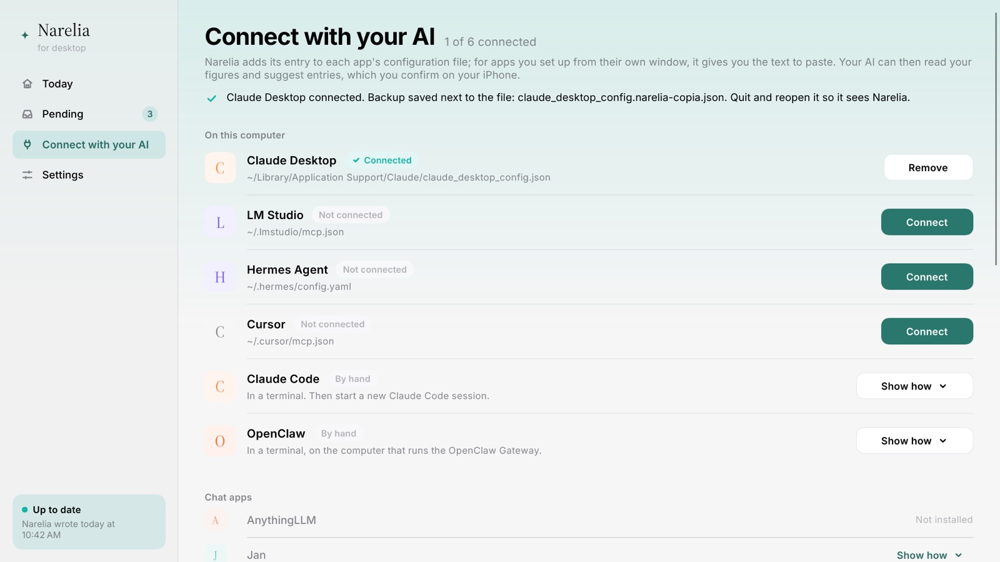

Narelia for Mac · download
Your figures, on your Mac.
Narelia for Mac reads the encrypted file your iPhone leaves in your iCloud Drive folder, shows you today’s figures and connects your AI with one button. It has no account and no server, and sends nothing anywhere.

Before you open it
It is not signed or notarized yet.
Narelia for Mac does not carry an Apple Developer ID signature yet. So the first time, macOS warns that it cannot check who made it. Signing is planned for a later version.
-
Drag it to Applications
Open the .dmg and move Narelia to the Applications folder.
-
Right-click and “Open”
In Applications, right-click (or Control-click) Narelia, choose “Open” and confirm with “Open”. You only need to do this the first time.
-
If macOS doesn’t offer “Open”
On macOS 15 and later you may only see “Done”. Go to System Settings → Privacy & Security, scroll down to the Narelia notice and click “Open Anyway”.
-
The Keychain may ask once
Your password is kept in the macOS Keychain. Without a signature, the first time your AI starts narelia-mcp after you install a new version, macOS may ask for permission: click “Always Allow”.
What’s inside.
- The window
- Today, Pending, Connect with your AI and Settings. It reads your folder and watches it: when the iPhone writes, the window catches up.
- narelia-mcp
- The MCP server, over stdio, that your AI apps start. It reads your figures for today and by day, compares periods and proposes logs that wait for your confirmation.
- Nothing leaves your Mac
- It only reads and writes in your folder. The password goes to the Keychain, never to a file or to your apps’ configuration. Before touching a configuration, it saves a copy next to it.